ESSENTIAL QUESTIONWhat was it actually like to fight in WWI, and why did so many people die?
TIMELINE
1915-1916
Armenian civilians are deported and killed during the genocide.
1916
Somme and Verdun show the terrible cost of trench warfare.
1917
Russia leaves the war, and the United States enters.
NOV. 11, 1918
An armistice stops the fighting on the Western Front.
At sunrise on July 1, 1916, British soldiers climbed ladders out of their trenches and walked toward German lines. Many had been told the enemy would already be destroyed by artillery. Instead, German machine guns opened fire almost immediately.
At sunrise on July 1, 1916, British soldiers climbed out of their trenches. They walked toward German lines. Many had been told the enemy would already be destroyed. German machine guns started firing almost right away.
By the end of that first day at the Somme, the British army had lost about 57,000 men killed, wounded, or missing. World War I was not a war of quick victories. It was a war where modern weapons met old battle plans, and the human cost was almost impossible to understand.
By the end of that first day at the Somme, Britain had lost about 57,000 men. Some were killed. Some were wounded or missing. World War I was not quick. Modern weapons made old battle plans deadly.
CHAPTER ONE
THE WESTERN FRONT BECOMES A 400-MILE SCAR
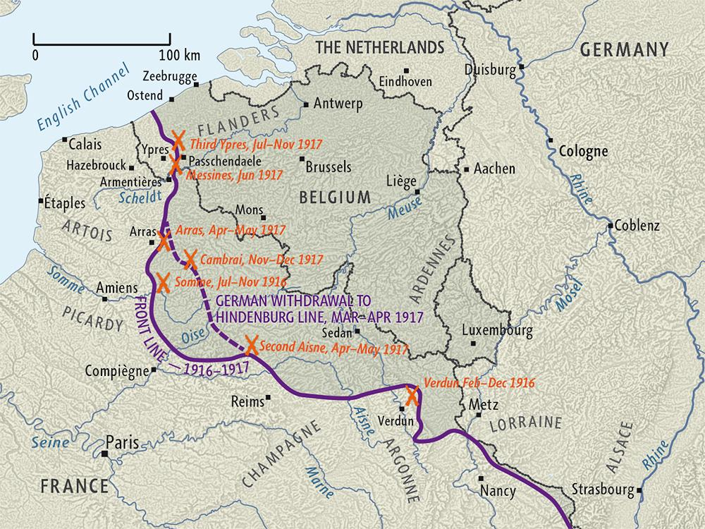
The Western Front stretched from Belgium to Switzerland. For almost four years, the line barely moved. Wikimedia Commons.
The Western FrontThe main fighting line in France and Belgium. was a long line of trenches that ran from Belgium to Switzerland. It stretched for about 400 miles. Soldiers lived underground in muddy ditches because standing in the open meant death.
The Western Front was a long line of trenches. It ran from Belgium to Switzerland. It was about 400 miles long. Soldiers lived in muddy ditches because open ground was too dangerous.
Trench warfareFighting from long dug-out ditches. was brutal even when soldiers were not attacking. Trenches filled with mud, rats, lice, and freezing water. Men got trench foot when their feet stayed wet too long. Shells exploded day and night, and the smell of bodies never fully left the air.
Trench warfare was terrible even on quiet days. Trenches had mud, rats, lice, and cold water. Men got trench foot when their feet stayed wet. Shells exploded day and night.
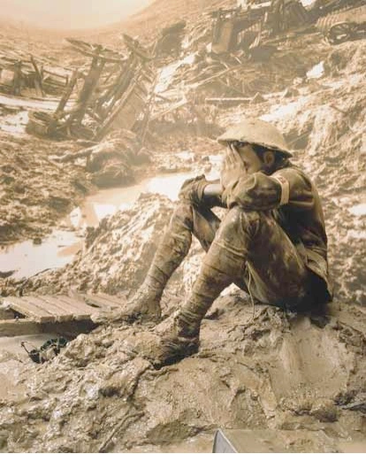
Soldiers in a muddy trench during World War I. Mud, water, rats, and shelling were part of daily life. Wikimedia Commons.
The land between enemy trenches was called no man's land. It was filled with shell holes, barbed wire, and bodies. To attack, soldiers had to climb out and cross that open space while machine guns and artillery fired at them.
The space between enemy trenches was called no man's land. It had shell holes, barbed wire, and bodies. Soldiers had to cross it during attacks. Machine guns and artillery fired at them.
Real-world connection: WWI shows how new technology can make old ideas about war suddenly deadly.
Real-world connection: New weapons can make old battle plans deadly.
DID YOU KNOW
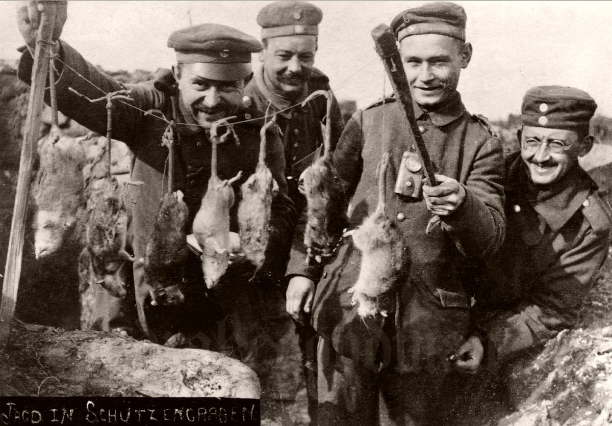
Rats became part of trench life.
Trench rats were not tiny background pests. Some soldiers wrote that rats grew fat from the food scraps and bodies around the trenches. Imagine trying to sleep in mud while rats ran over your face, and then being told tomorrow you might have to climb out and attack.
CHAPTER TWO
MODERN WEAPONS, OLD BATTLE PLANS
World War I became a stalemateA fight where neither side can win.. Each side tried to break through the other side's trenches. Most attacks failed because defense was stronger than offense. Machine guns, artillery, poison gas, and barbed wire all punished men moving across open ground.
World War I became a stalemate. That means neither side could win quickly. Each side tried to break through trenches. Most attacks failed. Defense was stronger than attack.
MACHINE GUNS
They fired bullets faster than men could cross open ground.
ARTILLERY
Huge guns killed from far away and tore up the land.
POISON GAS
Gas burned lungs, blinded soldiers, and spread terror.
BARBED WIRE
Wire trapped soldiers where machine guns could reach them.
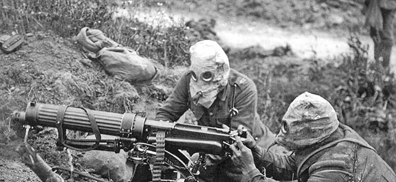
Machine guns made open attacks extremely deadly. Wikimedia Commons.
Total warA war using a whole nation's people and resources. meant the whole country supported the war effort. Factories made shells, guns, uniforms, and food. Civilians worked, saved supplies, and were targeted by enemy blockades. The line between soldier and civilian became less clear.
Total war meant the whole country was part of the war effort. Factories made weapons and supplies. Civilians worked and saved food. Civilians could also suffer from blockades and attacks.
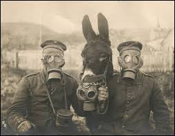
Soldiers wearing gas masks during World War I. Poison gas added a new kind of fear to the battlefield. Wikimedia Commons.
FAST FACTS
THE SCALE OF WORLD WAR I FIGHTING
400miles of trenches shaped the Western Front from Belgium to Switzerland.
57KBritish soldiers were killed, wounded, or missing on the first day of the Somme.
10months of fighting at Verdun showed how long one battle could grind on.
1918was the year the armistice finally stopped the fighting on the Western Front.
CHAPTER THREE
THE ARMENIAN GENOCIDE
While battles raged in Europe, the Ottoman government targeted Armenian Christians inside the Ottoman Empire. In 1915 and 1916, officials forced Armenians from their homes, sent many on deadly marches, and carried out mass killings. This is known as the Armenian GenocideOttoman killing of Armenian Christians during WWI..
While fighting happened in Europe, the Ottoman government targeted Armenian Christians. In 1915 and 1916, Armenians were forced from their homes. Many were sent on deadly marches. Many were killed. This is called the Armenian Genocide.
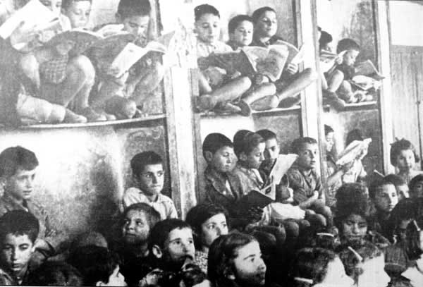
Armenian civilians forced from their homes during the genocide, 1915. Wikimedia Commons.
GenocideTrying to destroy a whole people. means trying to destroy a national, ethnic, racial, or religious group. Historians estimate that between about 600,000 and 1.5 million Armenians were killed. The Ottoman government used the chaos of war as cover.
Genocide means trying to destroy a whole group of people. Historians estimate that 600,000 to 1.5 million Armenians were killed. The Ottoman government used wartime chaos as cover.
This part of WWI matters because war can hide crimes against civilians. The Armenian Genocide shows that modern war was not only soldiers dying in trenches. It was also governments using war to attack people they saw as enemies inside their own borders.
This part of WWI matters because war can hide crimes against civilians. The Armenian Genocide shows that WWI was not only soldiers in trenches. It was also governments attacking civilians.
ART SPOTLIGHT
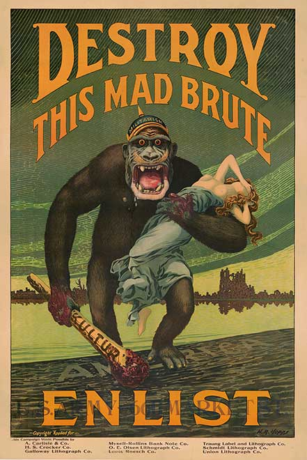
Destroy This Mad Brute — Harry R. Hopps, 1917. This U.S. Army recruitment poster used a frightening monster image to persuade American men to enlist during World War I.
The poster does not show trenches, mud, or shell shock. It shows a beast, a club, and one simple message: fight before the monster reaches you. That is how propaganda works at full speed: it turns a complicated war into one scary picture.
CHAPTER FOUR
REVOLUTION, AMERICA, AND THE END
In 1917, the war shifted. Russia was exhausted by defeats, hunger, and anger at the government. The Russian RevolutionThe 1917 overthrow of Russia's government. removed Russia from the war and changed world politics. Germany could now move more troops west.
In 1917, the war changed. Russia was exhausted by hunger, defeats, and anger. The Russian Revolution removed Russia from the war. Germany could move more troops west.
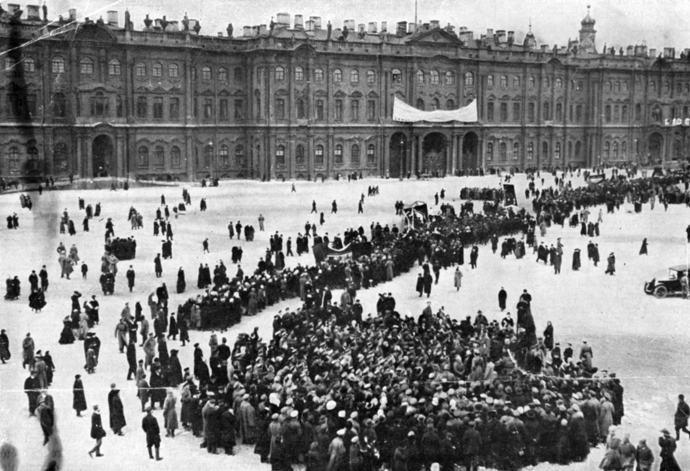
The Russian Revolution of 1917 pulled Russia out of World War I and changed global politics. Wikimedia Commons.
That same year, the United States entered the war. Germany's submarine attacks threatened American ships. Then the Zimmermann TelegramGerman message asking Mexico to fight the U.S. became public. In it, Germany suggested Mexico could join a war against the United States and regain lost territory.
That same year, the United States entered the war. German submarines threatened American ships. Then the Zimmermann Telegram became public. Germany had suggested that Mexico could fight the United States.
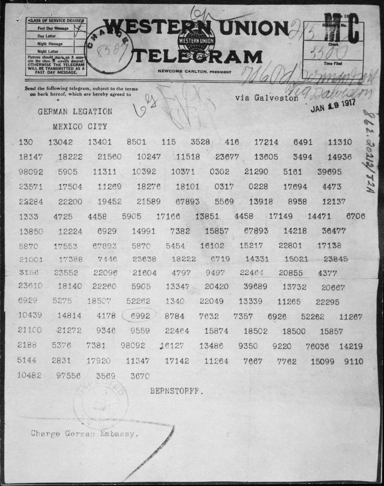
The Zimmermann Telegram, 1917. This message helped turn U.S. public opinion toward war. National Archives / Wikimedia Commons.
Fresh American troops helped tip the balance in 1918. Germany launched one last major attack, but it failed. On November 11, 1918, the fighting stopped with an armisticeAn agreement to stop fighting.. The war ended, but the peace would create new problems.
Fresh American troops helped the Allies in 1918. Germany tried one last major attack, but it failed. On November 11, 1918, the fighting stopped with an armistice. The war ended, but new problems were coming.
PRIMARY SOURCE MOMENT
A SOLDIER DESCRIBES THE GAS
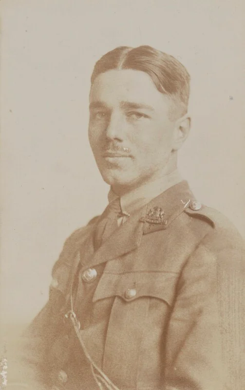
Wilfred Owen served as a British soldier and wrote poetry about the horror of modern war. Wikimedia Commons.
PRIMARY SOURCE
“Gas! GAS! Quick, boys! ... An ecstasy of fumbling, fitting the clumsy helmets just in time; But someone still was yelling out and stumbling, and floundering like a man in fire or lime ... Dim, through the misty panes and thick green light, as under a green sea, I saw him drowning.”
Wilfred Owen, “Dulce et Decorum Est,” written 1917, published 1920
Owen’s poem gives a soldier’s view of poison gas. He wanted readers to understand that the old idea of glorious death in war did not match what soldiers actually experienced.
THEN AND NOW
Modern weapons can turn open ground into a trap.
1916
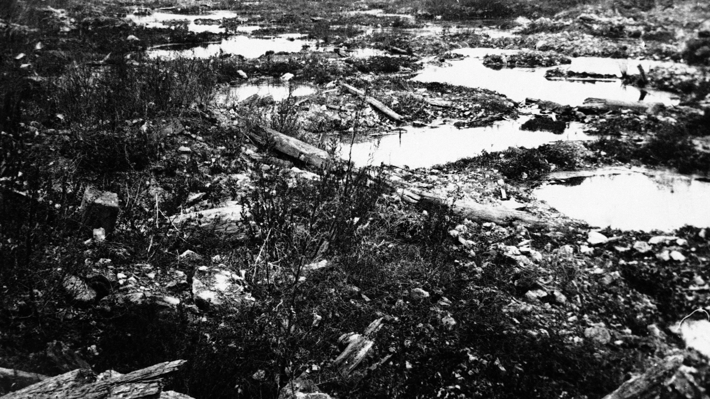
At the Somme, soldiers crossed shell-cratered open ground into machine guns, artillery, and barbed wire.
NOW
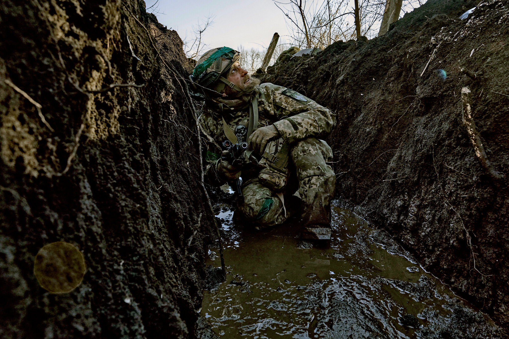
Modern wars can still use trenches when firepower makes open ground deadly.
THEN
In World War I, soldiers survived by staying low, but attacks forced them into no man's land. At places like the Somme, open ground became a trap filled with shell craters, barbed wire, machine-gun fire, and artillery. Modern weapons could kill thousands before the front line moved very far.
NOW
Modern conflicts can still include trenches when drones, artillery, and machine guns make open movement dangerous. The technology changes, but soldiers still search for cover when the battlefield punishes anyone who stands exposed.
CONNECTION
The connection is clear: military technology can change faster than tactics, planning, and political decisions. World War I reminds us that leaders must understand what new weapons do to real people before they send them into battle.
When technology changes war, what responsibility do leaders have before asking people to fight?